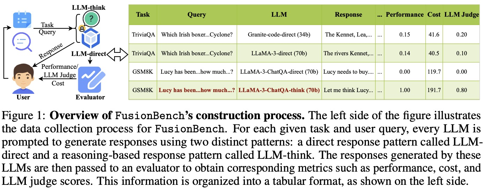

Overview of FusionBench’s construction process.

The rapid advancement of large language models (LLMs) has fostered a vibrant ecosystem of diverse architectures, each exhibiting unique strengths across different tasks due to variations in model design, training data, and optimization objectives. Despite this diversity, most LLM applications rely on a single backend model, limiting their ability to cover a wide range of capabilities and often resulting in inefficiencies in both performance and token costs when tackling complex tasks. We point out that modern LLM hosting platforms typically serve a variety of models in response to diverse queries, generating a rich and underutilized resource: LLM routing data, which offers insights into the comparative strengths of differ- ent models across tasks. We identify a critical gap in current LLM ecosystems, the underexploitation of large-scale LLM routing data, which holds significant potential for optimizing multi-LLM integration and effectively harnessing their complementary capabilities. To tackle this question, we propose FusionBench, a comprehensive routing benchmark that includes diverse response types from multiple LLMs, summarizes reusable thought templates from top models, and covers 14 tasks across five domains using 20 open-source LLMs ranging from 8B to 671B parameters, consisting of 103M tokens. Based on FusionBench, we propose FusionFactory, a systematic LLM fusion framework with three repre- sentative levels: (1) query-level fusion, which constructs tailored LLM routers for each query while considering both direct response patterns and reasoning- augmented outputs; (2) thought-level fusion, which enhances response quality by leveraging abstract thought templates derived from top-performing LLMs’ answers to similar past queries; and (3) model-level fusion, which transfers ca- pabilities between models through distillation methods, selecting top-performing responses or those with highest judge scores as training data. We systemati- cally evaluate FusionFactory on FusionBench and find that fusing LLMs with FusionFactory yields consistent benchmark performance improvement over the best individual LLM across 14 popular LLM benchmarks, where the optimal FusionFactory configuration varies across different benchmarks.
Overview of FusionBench’s construction process.
It shows how user queries are sent to different LLMs using two prompting strategies—direct answering and reasoning-based answering. The generated responses are then evaluated using multiple metrics, including performance, cost, and LLM judge scores. A sample table on the right demonstrates the collected results.
Data Summary of Tasks and Interacting LLMs in FusionBench.
At the query level, a router selects the most suitable LLM for each task-query pair by considering performance, cost, and LLM judge scores.
At the thought level, a summarizer generates reusable reasoning templates from the top-ranked responses. These templates are then used for few-shot prompting of new queries through similarity-based retrieval.
At the model level, a new LLM is fine-tuned using top-quality responses selected by performance or LLM judgment to enhance its overall capabilities. The table on the left provides example data points and evaluation results across different strategies.
Comparison of the LLM fusion abilities of all routers on four settings. Bold and underline denote the best and second-best results. We can observe the following: 1) GraphRouter consistently achieves the best results across all settings. 2) Graph Router can effectively fuse smaller LLMs to surpass both the best-performing LLM and the largest LLM. 3) Compared to the Best LLM, the other router methods offer no significant advantage, which illustrates the challenge that multi-task and multi-LLM fusion pose to the router’s fusing capability.
We can observe that our thought-level fusion approach consistently improves model performance across all scales. We have the following observations: 1) Thought fusion excels on tasks requiring complex reasoning. 2) Large models can also benefit from thought fusion. 3) Hybrid selection strategy provides optimal balance.
Performance of model-level fusion using LLaMA-3.1 (8B) on FusionBench, under different fine-tuning strategies and response selection criteria. We have the following observations: 1) Model-level fusion brings modest average improvements across tasks, with gains in 4 out of 6 domains. 2) Fusion gains are not uniform, with performance drops observed in code tasks due to domain mismatch and data scarcity. 3) LLM Judge–based selection yields the best results by offering nuanced and continuous quality assessment over rigid rule-based metrics.
Comparison of the three levels across six complete domains on full test set. We can observe that: 1) The thought-level approaches achieve the best fusion performances. 2) The model-level approaches yield the lowest performance among the three fusion levels. 3) The query-level fusion demonstrates moderate performance but is the most cost-efficient method. 4) Across different domains, we observe that compared to the zero-shot setting, fusing LLM capabilities is most challenging in the World Knowledge and Math domains.
@article{FusionFactory,
title={Fusing LLM Capabilities with Routing Data},
author={Tao Feng and Haozhen Zhang and Zijie Lei and Pengrui Han and Mostofa Patwary and Mohammad Shoeybi and Bryan Catanzaro and Jiaxuan You},
journal={arXiv preprint arXiv:xxxx.xxxxx},
year={2025}
}